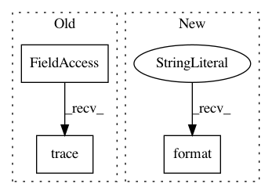

6ca46d807b12bb34e46cf83b83afa4abc45d797c,sos/target.py,RuntimeInfo,validate,#RuntimeInfo#,512
Before Change
env.logger.info("Validate with signature of non-existing target {}".format(freal))
fmd5 = freal.signature()
else:
env.logger.trace("File {} not exist".format(f))
return False
res[cur_type].append(freal.name() if isinstance(freal, FileTarget) else freal)
if fmd5 != m.strip():
env.logger.trace("MD5 mismatch {}: {} / {}".format(f, fmd5, m.strip()))
After Change
return "File {} not exist".format(f)
res[cur_type].append(freal.name() if isinstance(freal, FileTarget) else freal)
if fmd5 != m.strip():
return "File has changed {}".format(f)
files_checked[freal.name()] = True
except Exception as e:
env.logger.debug("Wrong md5 line {} in {}: {}".format(line, self.proc_info, e))
continue
In pattern: SUPERPATTERN
Frequency: 4
Non-data size: 3
Instances
Project Name: vatlab/SoS
Commit Name: 6ca46d807b12bb34e46cf83b83afa4abc45d797c
Time: 2016-12-11
Author: ben.bog@gmail.com
File Name: sos/target.py
Class Name: RuntimeInfo
Method Name: validate
Project Name: pantsbuild/pants
Commit Name: 40c214aa1c044a02b5290aa3ec7cc9570dbe24ad
Time: 2016-11-06
Author: stuhood@gmail.com
File Name: src/python/pants/engine/legacy/graph.py
Class Name: LegacyBuildGraph
Method Name: _index
Project Name: vatlab/SoS
Commit Name: dd5dd1abff53aa57db42b0a1777c3971eb094f9e
Time: 2017-02-13
Author: ben.bog@gmail.com
File Name: sos/target.py
Class Name: RuntimeInfo
Method Name: __setstate__
Project Name: vatlab/SoS
Commit Name: dd5dd1abff53aa57db42b0a1777c3971eb094f9e
Time: 2017-02-13
Author: ben.bog@gmail.com
File Name: sos/target.py
Class Name: RuntimeInfo
Method Name: __init__